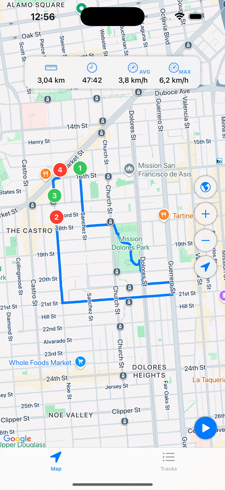
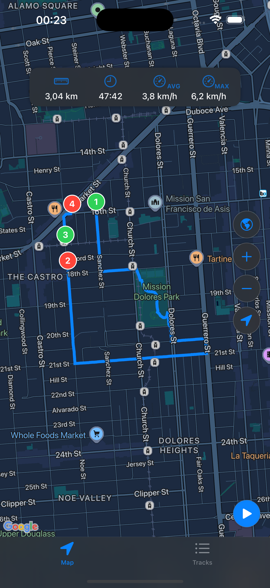

GPS Track Recording Made Simple
Create routes, track your journeys, and save them in the standard GPX format. Your reliable companion for recording all your adventures.


Main Features
GPS Track Recording
- Simple one-tap route recording
- Real-time tracking on the map
- Ability to continue interrupted tracks
- Background operation
Maps
- Google Maps support
- Switch between standard and hybrid modes
- Display current track on the map
Track Statistics
- Total route distance
- Travel time
- Maximum and average speed
- Current speed
File Management
- Import GPX files from other applications
- Export tracks in GPX format
- Rename and delete tracks
- Sort by name or date
Perfect For
Hiking and trekking
Cycling routes
Running and training
Travel and sightseeing
Any outdoor activities
Technical Requirements
iOS 17.0 or newer
iPhone, iPad
Location access required
Note: The app requires location permission to record tracks.
Start Your Adventure Today
Download MiniTracker and start recording your GPS tracks with ease.
Download on App Store